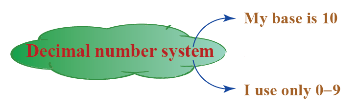

What is Number System?
Number System
Number Systems are systems in mathematics that are used to express numbers in various forms and are understood by computers.
A Number is a mathematical value used for counting and measuring objects, and for performing arithmetic calculations. Numbers have various categories like natural numbers, whole numbers, rational and irrational numbers, and so on.
Similarly, there are various types of number systems that have different properties, like the binary number system, the octal number system, the decimal number system, and the hexadecimal number system.
Types of Number System
- Binary Number System (Base - 2)
- Octal Number System (Base - 8)
- Decimal Number System (Base - 10)
- Hexadecimal Number System (Base - 16)

• Binary Number System
The binary number system uses only two digits: 0 and 1. The numbers in this system have a base of 2. Digits 0 and 1 are called bits and 8 bits together make a byte. The data in computers is stored in terms of bits and bytes. The binary number system does not deal with other numbers such as 2, 3, 4, 5 and so on. For example: 100012, 1111012, 10101012 are some examples of numbers in the binary number system.
The binary number system is commonly used in digital electronics, computer science, and information technology, because electronic devices can easily distinguish between two states, such as on/off or high/low voltage levels, and use these states to represent binary digits. Binary numbers can also be used to represent text, images, and other data in a digital format.
• Octal Number System
The octal number system uses eight digits: 0, 1, 2, 3, 4, 5, 6 and 7 with the base of 8. The advantage of this system is that it has lesser digits when compared to several other systems, hence, there would be fewer computational errors. Digits like 8 and 9 are not included in the octal number system. Just as the binary, the octal number system is used in minicomputers but with digits from 0 to 7. For example: 35 8, 238, 1418 are some examples of numbers in the octal number system.
The octal number system is used in some computer programming languages and other applications where a compact representation of large numbers is needed. For example, in some UNIX-based systems, file permissions are represented using a 3-digit octal number, where each digit represents the permissions for the owner, group, and others, respectively.
• Decimal Number System
The decimal number system uses ten digits: 0, 1, 2, 3, 4, 5, 6, 7, 8 and 9 with the base number as 10. The decimal number system is the system that we generally use to represent numbers in real life. If any number is represented without a base, it means that its base is 10. For example: 72310, 3210, 425710 are some examples of numbers in the decimal number system.

The decimal system is also the basis for many other number systems, including the binary, octal, and hexadecimal systems used in computer science and digital electronics. Understanding the properties and operations of the decimal system is essential for anyone working with numbers and data, and is a foundational concept for many fields of study.
• Hexadecimal Number System
The hexadecimal number system uses sixteen digits/alphabets: 0, 1, 2, 3, 4, 5, 6, 7, 8, 9 and A, B, C, D, E, F with the base number as 16. Here, A-F of the hexadecimal system means the numbers 10-15 of the decimal number system respectively. This system is used in computers to reduce the large-sized strings of the binary system. For example, 7B316, 6F16, 4B2A16 are some examples of numbers in the hexadecimal number system.
The hexadecimal number system is widely used in computer science and digital electronics to represent binary numbers more compactly and to simplify the process of working with large binary numbers. Because each hexadecimal digit represents four binary digits, or bits, groups of four binary digits can be represented using a single hexadecimal digit. This makes it easier to read and write binary numbers and perform calculations with them.
In addition to its use in representing binary numbers, the hexadecimal number system is also used in other applications, such as color representation. In digital graphics, colors are often represented using three or four bytes, with each byte representing the intensity of the red, green, and blue color channels. Each of these bytes can be represented as two hexadecimal digits, allowing colors to be specified using a six- or eight-digit hexadecimal number. For example, the color white is represented as the hexadecimal number #FFFFFF, which represents the maximum intensity of each color channel.
The hexadecimal system is also used in computer programming, particularly in low-level programming languages such as assembly language. Memory addresses and machine code instructions are often expressed as hexadecimal numbers, which are easier to read and write than binary numbers and can be converted to and from binary more easily than decimal numbers.
In summary, the hexadecimal number system is a useful tool for working with binary numbers and is used extensively in computer science and digital electronics. Its ability to represent groups of binary digits with a single digit makes it a convenient way to work with large binary numbers, and its use in other applications such as color representation and computer programming make it a valuable concept to understand for anyone working in these fields.
Number System About:
A number system is a system of representing numbers using symbols or digits. It is a way of expressing numerical values, either by counting or measuring. Different number systems use different symbols or digits and follow different rules for combining them to represent numbers. The most common number system is the decimal system, which uses 10 digits (0, 1, 2, 3, 4, 5, 6, 7, 8, and 9), and is used in everyday life for counting, measuring, and making calculations. Other number systems include the binary system, which uses 2 digits (0 and 1), the octal system, which uses 8 digits (0 to 7), and the hexadecimal system, which uses 16 digits (0 to 9 and A to F). Number systems are essential to mathematics, computer science, engineering, telecommunications, finance, and many other fields where numerical data needs to be represented, manipulated, or analyzed.
Number systems are used in a wide variety of applications, including:
- Mathematics: Number systems are essential to mathematics, which uses them to represent, manipulate, and solve numerical problems.
- Computer Science: Number systems are used extensively in computer science, especially in digital electronics, programming, and data representation. Computers use the binary number system to represent and process data.
- Telecommunications: Number systems are used in telecommunications to represent analog signals as digital signals. This is achieved by sampling the analog signal at regular intervals and representing each sample as a digital number.
- Engineering: Number systems are used in engineering for calculations, measurements, and control systems. In particular, the binary and hexadecimal number systems are commonly used in computer engineering and digital signal processing.
- Finance: Number systems are used in finance to represent and manipulate financial data, such as currency values, interest rates, and stock prices.
- Science: Number systems are used in science to represent and manipulate physical measurements and calculations, such as in physics, chemistry, and astronomy.
- Music: Number systems are used in music theory to represent musical notes, intervals, and chords.
About
- If you want to learn more, you can search for it in your browser.
- The content of this site is not mine to take credit. I only get information on the internet.
- Click to Watch my Video